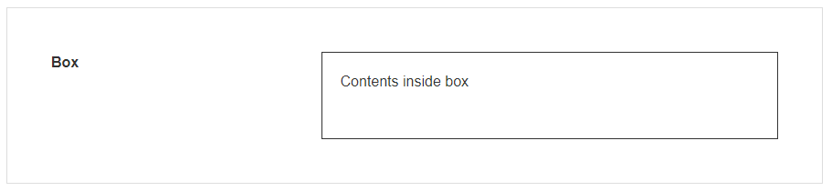
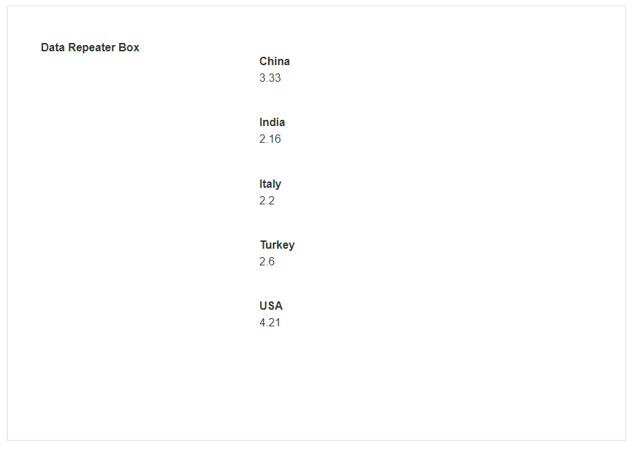

Box & Data Repeater Box
A Box is a simple Block that allows you to add data or other elements inside it. This can be used as a container to store a group of other Blocks.
A Data Repeater Box is a Box that allows you to repeat data multiple times, including data that is coming from a Data Source. If a text field is added to the Data Repeater Box, that text Block can be bound to a field coming from the Data Source. The Data Repeater Box will then repeat the data for that field for each record.
Warning
Take care with repeated elements that also have a Data Source, such as a Lookup, as their Data Source is fetched for every record returned by the Data Repeater's Data Source. A large result set may result in a timeout.
You can use the Show # of Results under the Data Source property to limit the repetition of the blocks.
Box Properties
Appearance
Common Properties
The visibility property is common to most Blocks;
See the Common Properties article for more details on common appearance properties.

Data Source
Common Properties
The Box has properties that are common to most Blocks: filter, sort, show # of results, and skip # of results;
See the Common Properties article for more details on common data source properties.
Data Repeater Box Properties
Appearance
Common Properties
The visibility property is common to most Blocks;
See the Common Properties article for more details on common appearance properties.

Data Source
Common Properties
The data repeater box has properties that are common to most Blocks: filter, sort, show # of results, skip # of results, and show default row;
See the Common Properties article for more details on common Data Source properties.
Last modified: May 24, 2025